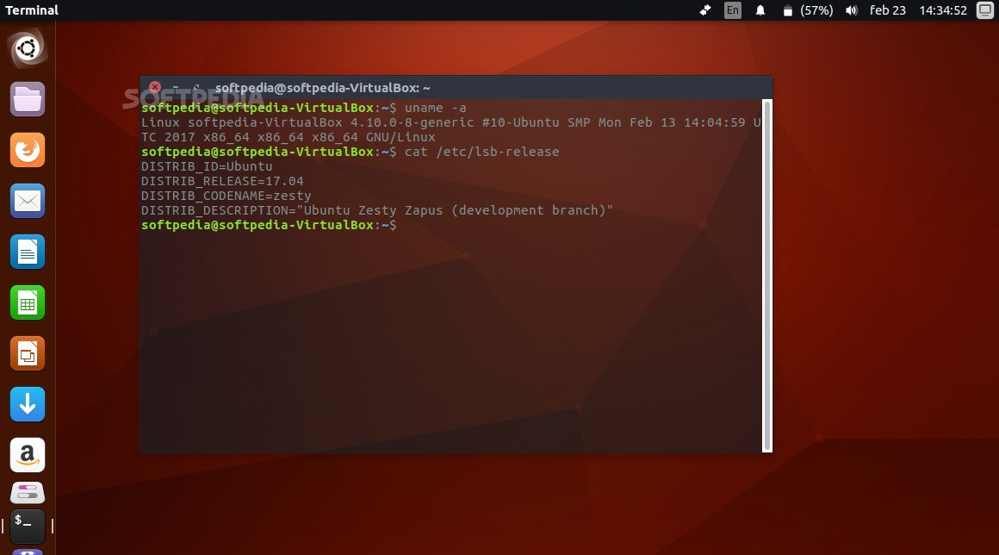

Ubuntu 4.10 (Warty Warthog) Crack
Ubuntu 4.10 (Warty Warthog) was the first public release of the Ubuntu,It was released on October 20, 2004, and was available for desktop computers.Both 32 , 64-bit versions are available at Ubuntu 4.10, PowerPC version are also available.
Ubuntu 4.10 (Warty Warthog) was the first public release of the Ubuntu operating system. It was released on October 20, 2004, and was available for desktop computers. Both 32 and 64-bit versions are available at Ubuntu 4.10, PowerPC version, and Live CD are also available. This version includes GNOME Desktop Environment v 2.8, Firefox Web Browser 0.9, some productivity software etc.
Ubuntu is a free and open source Linux operating system (currently the most popular Linux distribution) installed on over 40 million personal computers, and is installed on a large number of servers around the world. At present, there are four different versions of the operating system, which are Ubuntu Desktop (for personal computers), Ubuntu Server (for servers), Ubuntu for IoT, and Ubuntu Cloud (for cloud computing). Originally, the operating system was made for personal computers, currently the desktop version of Ubuntu comes with usefull software applications, such as LibreOffice (Office software), Thunderbird (email client), Firefox (web browser), while more applications can be installed from Ubuntu Software Center.
"We recommend commercial customers running earlier versions of Windows 10 begin broad deployments of Windows 10, version 1903, in their organizations," according to the Sept. 26 note on the page.
Microsoft is still not believed to have finalized its Windows 10 1909 feature release, but it seemingly is close to doing so. Once that happens, Microsoft should begin rolling out 1909 to mainstream users. I'm hearing this should happen in the next month or so. To make sure you're ready and in control when the next Windows 10 feature update hits, check out these tips from my ZDNet colleague Ed Bott.
For those wondering what's happening with Windows Server 1909, which is the semi-annual feature update for Windows Server, I have some news. Although Microsoft has not released a single test build of Server 1909 to Insider testers -- even though it has released several test builds of Server 2003/Server 20H1 to testers -- Server 1909 exists and is coming.

I asked Microsoft this week for an update on what's happening with Server 1909 and why the company has not issued a test build of it. While not answering the testing question, a spokesperson provided the following:
"We plan to share the next Windows Server Semi-Annual Channel Release this fall. This release is focused on reliability, performance and other general improvements."
My contacts say Microsoft is hoping to start rolling out Server 1909 to mainstream users around mid-November 2019. The product will be Sever 1903 updated with the latest Cumulative Update (fixes and a few minor features), sources say. The Windows 10 1909 client could be out before Server begins rolling out, my contacts believe.